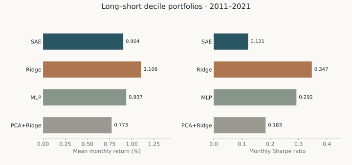

The research question
Can a low-dimensional representation of firm characteristics help rank subsequent equity returns, and how does it compare with simpler models?
Data & methodology
Monthly U.S. equity observations for 2001–2021, using 94 firm-characteristic inputs. The saved notebook reports 1,027,681 rows after removing missing targets. The 252 local monthly files derive from CRSP/Compustat through WRDS and are not redistributed.
- Used the 94 → 64 → 8 encoder, linear return head and 8 → 64 → 94 reconstruction decoder.
- Combined return MSE, within-month pairwise ranking loss and reconstruction loss with the original weights 0.5, 0.5 and 0.05.
- Compared Ridge, PCA + Ridge and MLP. For test year t, training ends at t−2 and validation uses t−1; test years are 2011–2021.
- Evaluated return error, monthly Spearman Rank IC and equal-weight top-minus-bottom decile portfolios.
What the evidence shows
In the project notebook, the SAE leads average Rank IC, while Ridge leads the long–short decile return and monthly Sharpe comparison. All four mean R² values are negative against the stated test-year-mean benchmark. Ranking skill does not imply superior return accuracy or trading performance.


Implications
The project illustrates why predictive error, ranking quality and portfolio behavior must be evaluated separately. It also provides a transparent comparison of representation learning with simpler baselines.
Evaluation boundaries
Portfolio returns are gross of costs; monthly Sharpe is not annualized. The reported portfolio summary uses top/bottom deciles. The notebook and modular implementations differ in preprocessing and validation details, as specified in the repository. The merged WRDS-derived input panel is not publicly redistributed.
Explore the implementation
The repository contains source code, datasets or retrieval instructions, model results and execution instructions.
View Source Code on GitHub ↗